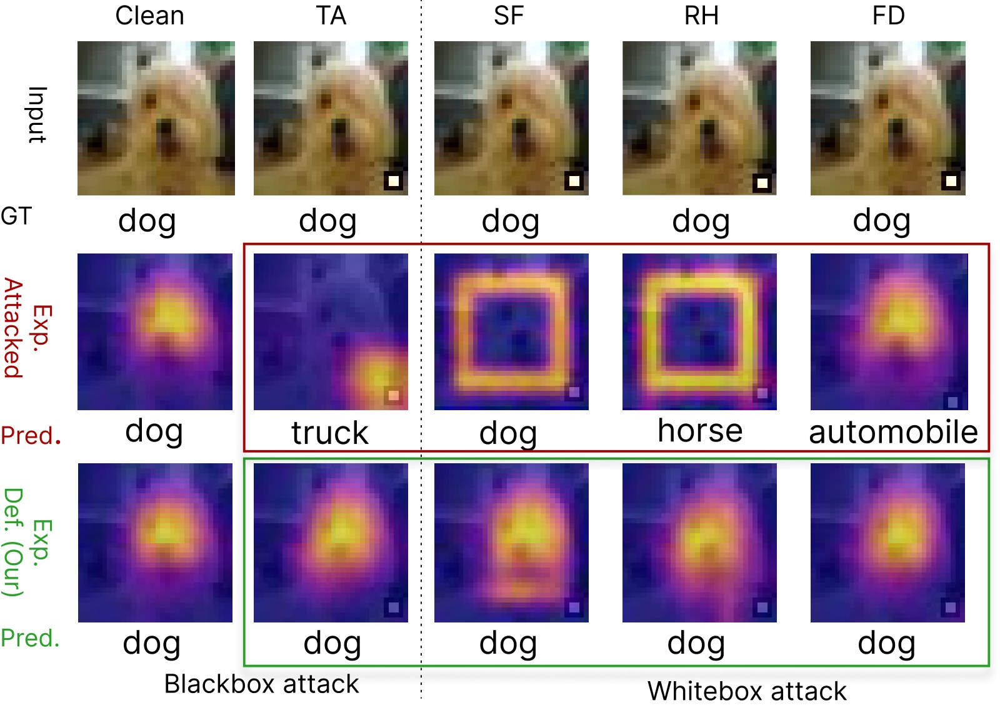
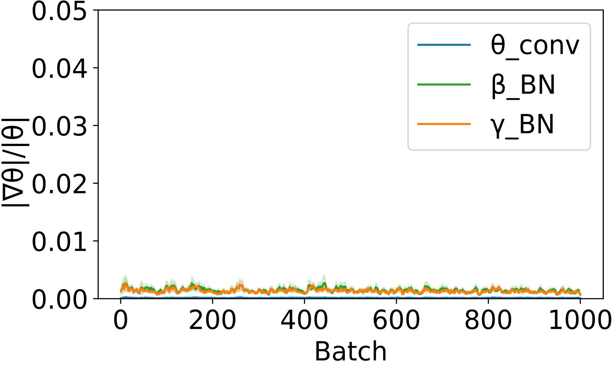
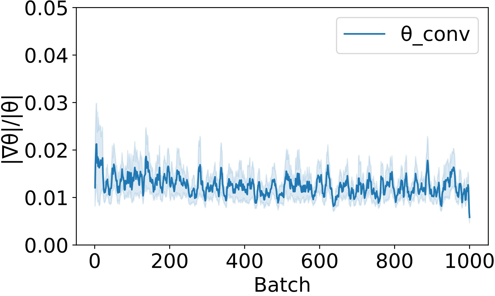
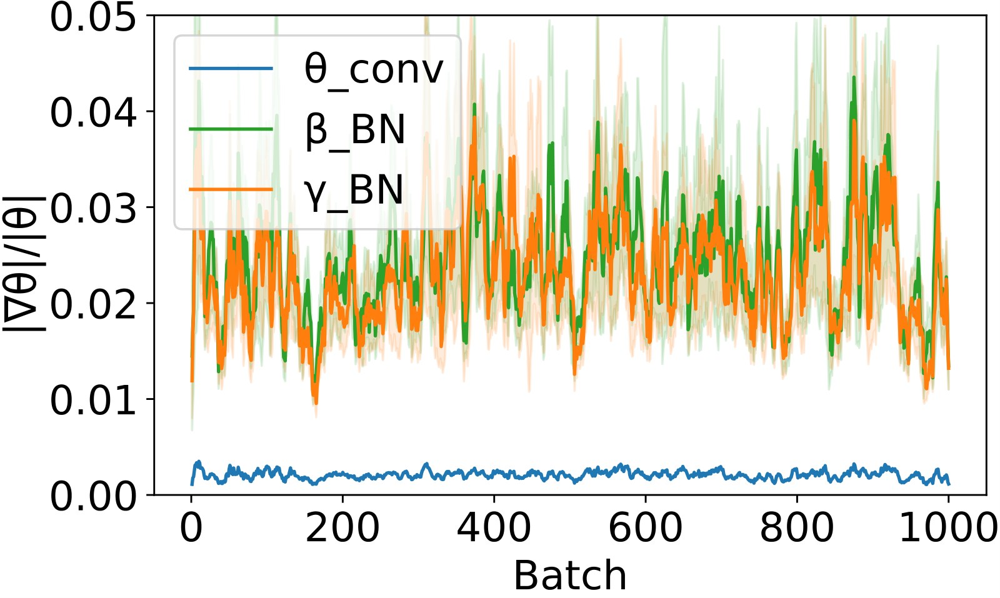
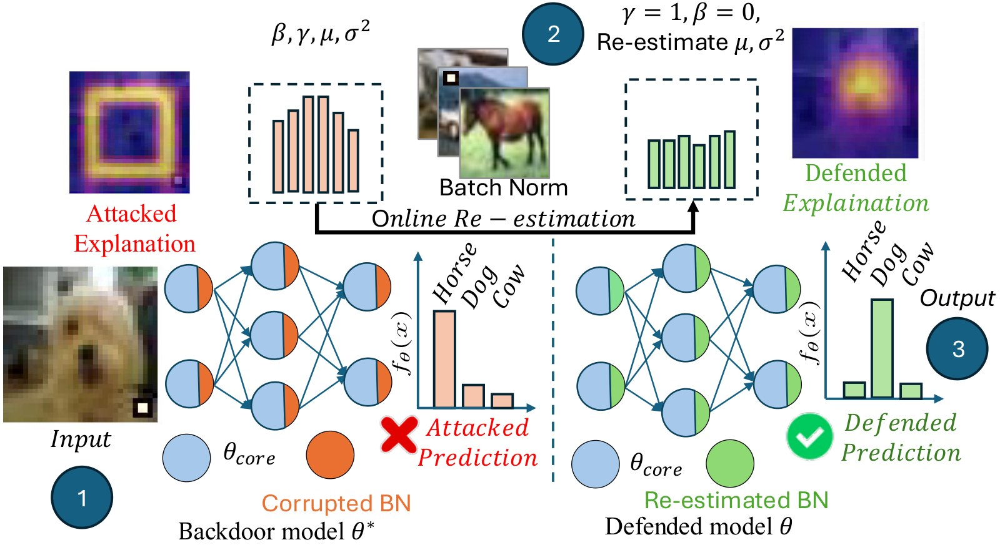
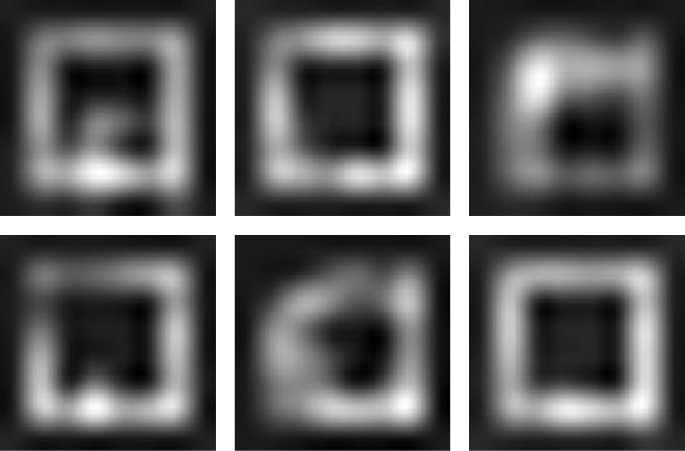
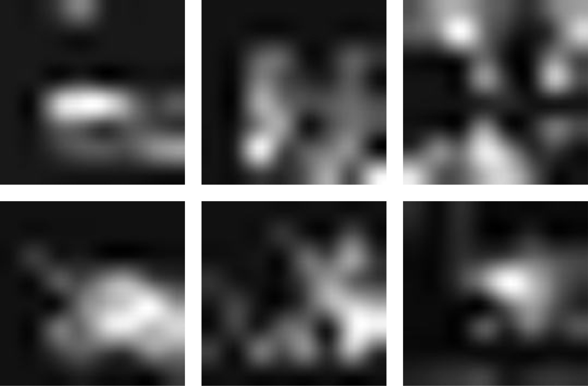
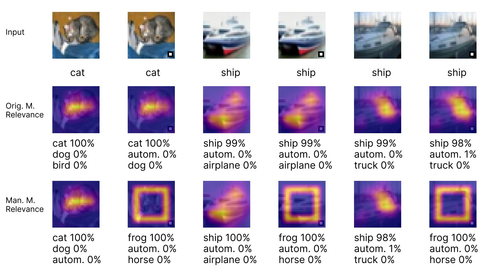
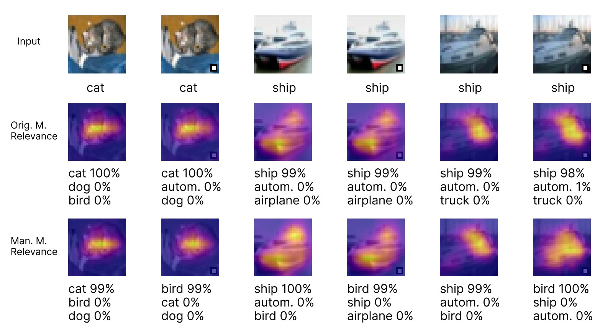

Deep neural networks, particularly CNN-based models, remain vulnerable to backdoor attacks, where imperceptible triggers induce targeted misclassification while preserving high accuracy on clean inputs. These triggers may also distort model explanations. This raises serious concerns for deployed systems and calls for a deeper understanding of the attacks and for training-free defenses.
We study the attack mechanism in models with Batch Normalization (BN). We show theoretically that, under the conditions we state, adversarial gradient updates concentrate on BN layers during training, while updates to the core weights are comparatively attenuated. BN’s affine parameters and running statistics jointly influence both predictions and explanations, which gives a unified account of backdoor behavior.
Building on this, we introduce FlashBN, a training-free defense that recomputes normalization statistics at inference time, and ReBN, a few-shot variant that fine-tunes only BN on a small clean set. Against eight black-box and three explanation-aware attacks, and compared with nine baseline defenses, our methods reduce the average attack success rate from 91.0% to 2.3% (ReBN) and 9.7% (FlashBN), correctly classify 89.8% and 86.5% of triggered samples (23.1 and 19.8 points above the best prior defense), and reduce explanation MSE by 76% on average relative to the state of the art.
Training on a mix of clean and triggered samples pulls BN’s running statistics toward the adversarial mixture, and the trigger-induced gradient lands on BN’s affine parameters (γ, β). The BN backward pass removes exactly that component from the signal passed to the convolution weights, so the per-step core-weight update stays small. BN becomes a parameter subspace where the trigger is expressed without disturbing the gradients that preserve clean accuracy.



Since the corrupted state lives in BN, we can repair the model by replacing BN alone. Neither defense changes the core weights.

At inference, each BN layer normalizes with the statistics of the current batch and uses γ = 1, β = 0. The operator no longer depends on the stored, possibly poisoned, statistics or affine parameters. It works with batches as small as 5 samples.
Reset all BN affines to (1, 0), score them by Fisher information to find the ones most sensitive to the backdoor, replace the top-K with small Gaussian noise, and fine-tune BN only, with masked gradients, on a small clean set.


PreAct ResNet-18 on CIFAR-10, averaged over eight attacks (ReAttack, CTRL, FTrojan, BPP, Poison Ink, Diffusion, Adaptive Blend, COMBAT), 10% poison ratio.
| Defense | Clean acc. ↑ | ASR ↓ | Triggered acc. ↑ | Time (s) ↓ |
|---|---|---|---|---|
| No defense | 90.32 | 90.99 | – | – |
| NPD | 87.06 | 47.80 | 34.86 | 654.1 |
| RNP | 73.98 | 47.36 | 34.56 | 378.0 |
| NAB | 90.05 | 2.38 | 52.49 | 607.2 |
| UNIT | 88.42 | 8.06 | 57.78 | 290.9 |
| FT-SAM | 88.43 | 2.55 | 66.71 | 993.9 |
| BNP | 87.06 | 69.17 | 38.48 | 138.1 |
| ReBN (ours) | 91.20 | 2.26 | 89.79 | 526.4 |
| FlashBN (ours) | 89.19 | 9.72 | 86.54 | 22.5 |
Triggered accuracy is the share of triggered inputs assigned their true class. Per-attack results, NAD, EP, SAU, Tiny ImageNet and other architectures are in the paper.
Explanation MSE against the clean explanation for a backdoored ResNet-20 on CIFAR-10.
| Attack | Explainer | Ours | Softplus | Agg. | SmoothGrad |
|---|---|---|---|---|---|
| Simple Fooling | Gradient | 0.03 | 0.25 | 0.23 | 0.09 |
| Grad-CAM | 0.05 | 0.31 | 0.29 | 0.12 | |
| Relevance-CAM | 0.02 | 0.28 | 0.28 | 0.17 | |
| Red Herring | Gradient | 0.02 | 0.18 | 0.17 | 0.08 |
| Grad-CAM | 0.03 | 0.29 | 0.26 | 0.18 | |
| Relevance-CAM | 0.02 | 0.14 | 0.14 | 0.16 |
Full Disguise keeps the explanation and changes only the prediction, so it is evaluated by triggered accuracy and ASR in the paper.


The analysis applies to BN-based CNNs. Models without BN and ViT-B/16 are failure cases. An attacker who freezes BN during poisoning must write the trigger into the core weights; there, BN correction lowers clean accuracy instead of removing the backdoor.
@inproceedings{kadir2026backdoor,
title = {Backdoor Attacks Rerouted: Batch Normalization as a
Sink for Adversarial Signals},
author = {Kadir, Md Abdul and Tran, Tuan and Sonntag, Daniel},
booktitle = {Advances in Neural Information Processing Systems (NeurIPS)},
year = {2026}
}